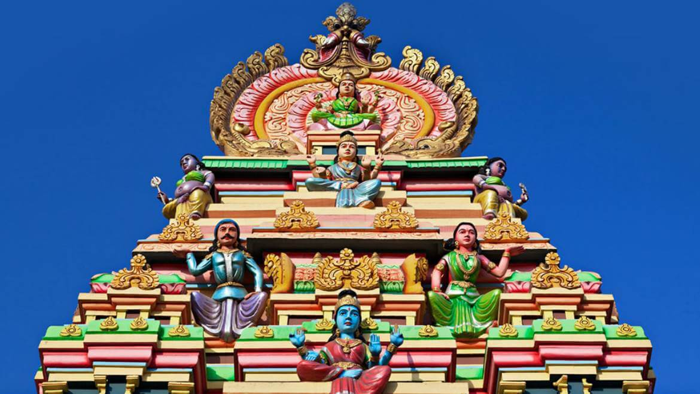

Bygone times brings bygone glories, glories of the past when the grandeur of royal kings were adorning each corner of India in the form of astounding forts, visually appealing temples and tales of valour. When India used to tell tales through various sculptures of artistic artisans and the mystical stories and legends of saints and Gods used to fine tune the spirit of every Indian, which it still does. Today we are going to talk about the bygone glory one such a land. The land of many tales that are mystic and other-worldly; the land where elaborate architecture and brilliant sculptures of its ancient temples, leave all its tourists spellbound with their astounding beauty, it’s the abode of delightful temples, the abode of other- worldly – Tamil Nadu. A trip to these temples showcases the opulent and lavish tastes of the erstwhile royal kings, be it Pallavas, Cholas or Nayakas. Standing tall as the backbone of the Tamil culture, these temples are today India’s precious jewels adding to its rich heritage. Tamil Nadu that not only provides you a great spiritual
